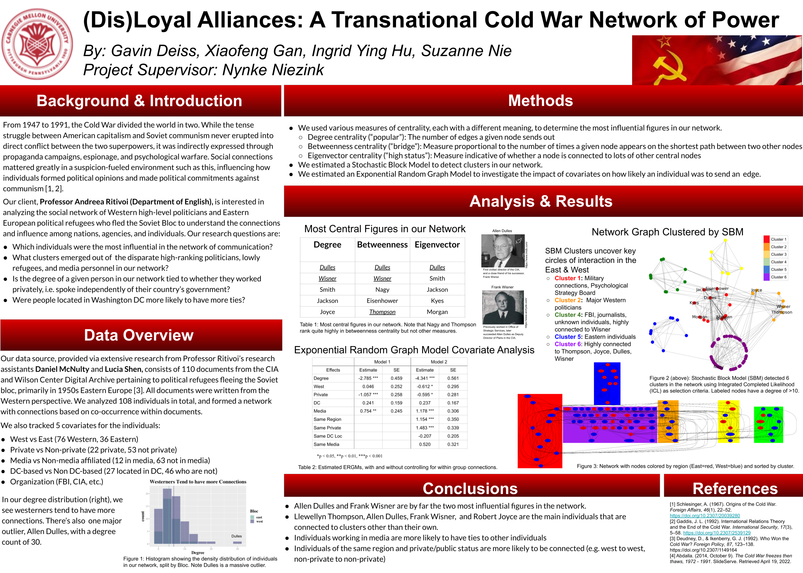
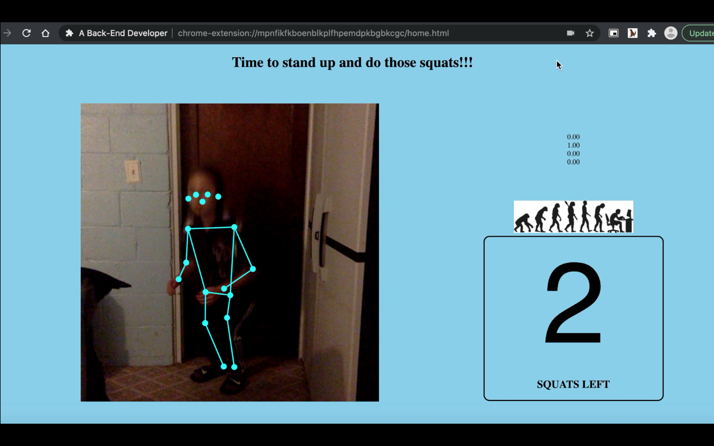
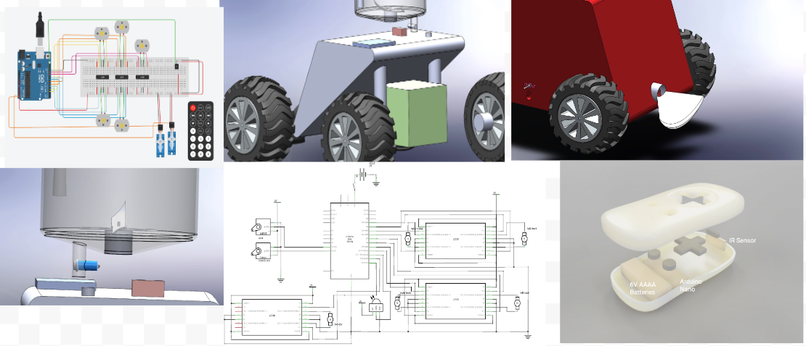
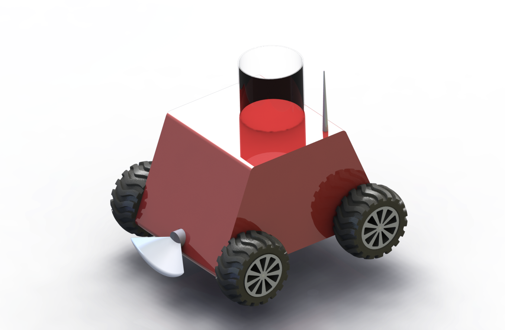
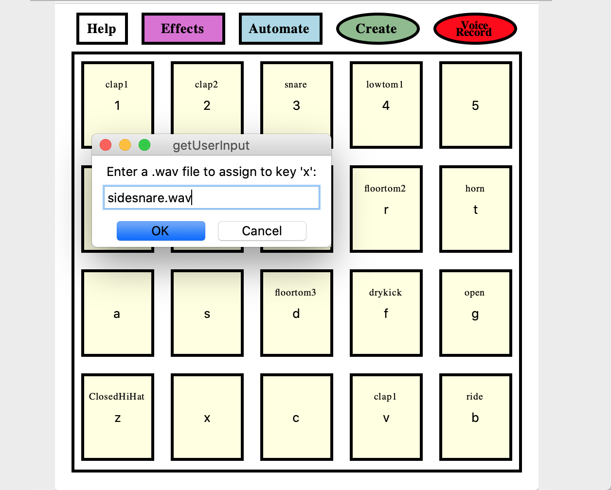

Projects
- (Dis)loyal Alliances: A Transnational Cold War Network of Power
-
Modeling and analyzing the social network and influence among nations, agencies, and individuals
primarily in 1950s Eastern Europe
- Second Place - Meeting of the Minds Statistics Poster Competition (2021-22 academic year)
(Capstone website)

- A Back End Developer
-
Chrome extension using image classification model trained with google teachable machine
- 3rd Place Overall, Best Hardware Hack, and Punniest Project Name at Pearl Hacks 2021
- Demo Video

- Find the Bern
-
A game inspired by mittens, built with socket connections
- Hacker's Choice Runner Up at HackUCI 2021 (338 participants)
- Demo Video, Devpost link
- Play the game! https://findthebern.herokuapp.com

- RC Moss Dispenser
-
Final Project
Documentation on the
Course Site.
-
2020 Physical computing project collaborated with Osher students. My group designed a
remote-controlled car with a blender on the top, a tank to hold moss, and a funnel to dispense the
mixture at the bottom to help Beth clean-up and beautify her yard.
- Used C, Arduino, tinkercad


- Automated Soundboard
-
Beat creation python app based on sound frequency 2019
-
Demo video,
Github repository
- Input wav files into a chosen sized soundboard, play them with their keyboard, add certain effects to
their sounds, record what they play, and create automated default beats or new ones, selected
based on frequency.
